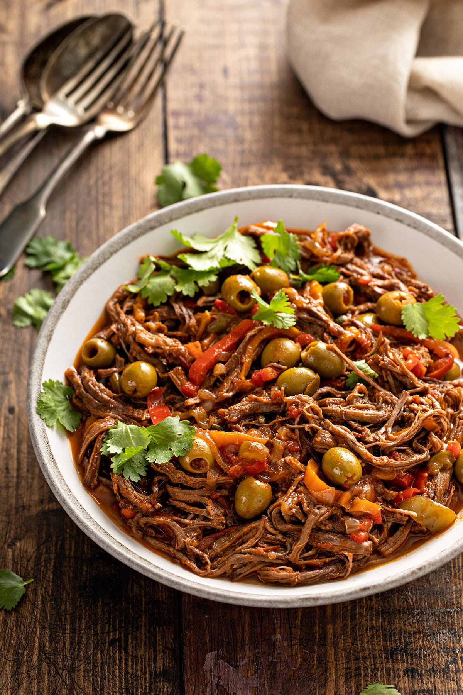

Ropa Vieja Recipe

Description
Ropa Vieja, the national dish of Cuba, is a savory shredded beef dish well known in Latin America and Caribbean countries like Puerto Rico, Dominican Republic and Jamaica. This traditional stew recipe varies throughout different regions and countries, with some versions including potatoes and garbanzo beans.
ingredients
- 1 tablespoon vegetable oil
- 2 pounds beef flank steak
- 1 cup beef broth
- 1 (8 ounce) can tomato sauce
- 1 (6 ounce) can tomato paste
- 1 green bell pepper, seeded and sliced into strips
- 1 small onion, sliced
- 2 cloves garlic, chopped
- 1 teaspoon ground cumin
- 1 teaspoon chopped fresh cilantro
- 1 tablespoon olive oil
- 1 tablespoon white vinegar
Steps
- Heat vegetable oil in a large skillet over medium-high heat. Add flank steak and cook until browned, about 4 minutes per side.
- Transfer steak to a slow cooker; pour in beef broth and tomato sauce. Add tomato paste, bell pepper, onion, garlic, cumin, cilantro, olive oil, and vinegar; stir until well blended.
- Cover and cook on Low for up to 10 hours, or on High for 4 hours.
- Shred steak in the slow cooker with two forks.